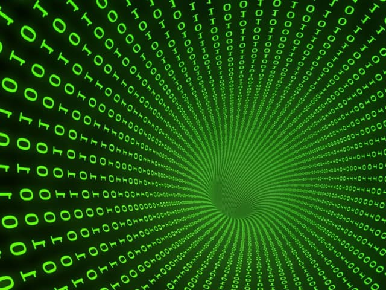

Het Binair stelsel
Wat is het Binair Stelsel?
Het binaire stelsel, ook wel bekend als het grondtal 2-stelsel, is een getalstelsel dat slechts twee cijfers gebruikt om getallen te representeren: 0 en 1. In tegenstelling tot het decimale stelsel, dat 10 cijfers gebruikt (0-9), maakt het binaire stelsel gebruik van een eenvoudige tweecijferige notatie om informatie op een gestructureerde manier weer te geven. 
Grondslag 2
De term "grondslag 2" verwijst naar het feit dat het binaire stelsel is gebaseerd op machten van 2. Elk cijfer in een binair getal vertegenwoordigt een macht van 2, beginnend bij 2^0, 2^1, 2^2, enzovoort. Dit maakt het binaire stelsel bijzonder geschikt voor digitale elektronica, waarin informatie als elektrische signalen wordt opgeslagen en verwerkt.
Binaire Getallen
Binaire Notatie:
Binaire getallen bestaan uit een reeks 0'en en 1'en. Elke positie in een binair getal vertegenwoordigt een bepaalde macht van 2. Bijvoorbeeld, het binaire getal 1101 komt overeen met 1 * 2^3 + 1 * 2^2 + 0 * 2^1 + 1 * 2^0 in decimale notatie, wat resulteert in het getal 13.
Bit:
Een enkel cijfer in een binair getal wordt een "bit" genoemd, wat een afkorting is voor "binary digit." Een bit kan de waarde 0 of 1 hebben en is de kleinste eenheid van informatie in het binaire stelsel.
Byte:
Een "byte" bestaat uit 8 bits en wordt vaak gebruikt om gegevens op te slaan en te verwerken in computers en digitale systemen. Een byte kan 256 verschillende waarden representeren, variërend van 00000000 tot 11111111 in binaire notatie.
Toepassingen van het Binair Stelsel
Computers en Digitale Elektronica:
Het binaire stelsel vormt de kern van computers en digitale elektronica. Computers gebruiken binaire codes om gegevens op te slaan, te verwerken en te communiceren. Het schakelen tussen aan-uittoestanden (0 en 1) in elektronische schakelingen maakt complexe berekeningen en gegevensverwerking mogelijk.
Telecommunicatie:
In telecommunicatiesystemen worden gegevens verzonden en ontvangen als binaire signalen, waarbij 0 en 1 staan voor verschillende elektrische of optische signalen. Dit maakt gegevensoverdracht over lange afstanden mogelijk, zoals telefoongesprekken en internetverkeer.
Gegevensopslag:
Harde schijven, solid-state drives (SSD's) en andere opslagapparaten slaan gegevens op in de vorm van binaire getallen. Het binaire stelsel maakt efficiënte opslag en betrouwbare gegevensreproductie mogelijk.
Binair in de Praktijk
Programmeren:
Programmeurs schrijven code in programmeertalen die gebruikmaken van binaire getallen om instructies aan computers te geven. Deze instructies worden vertaald in machinetaal, die begrepen wordt door de CPU van een computer.
Beeldverwerking:
Afbeeldingen worden vaak opgeslagen en verwerkt met behulp van binaire gegevens. Kleuren worden gecodeerd met binaire getallen, en beeldverwerkingstechnieken omvatten bewerkingen op deze binaire representaties.
Codering en Cryptografie:
Binaire codering is essentieel in cryptografie voor het versleutelen en beveiligen van gegevens. Algoritmen gebruiken binaire operaties om geheime boodschappen te coderen en te decoderen, waardoor vertrouwelijke informatie wordt beschermd.
Conclusie
Het begrijpen van het binaire stelsel is van fundamenteel belang voor iedereen die zich bezighoudt met informatietechnologie en digitale systemen. Het vormt de basis van hoe moderne technologieën werken, en het vermogen om te communiceren en te werken met binaire gegevens is cruciaal in de hedendaagse digitale wereld.